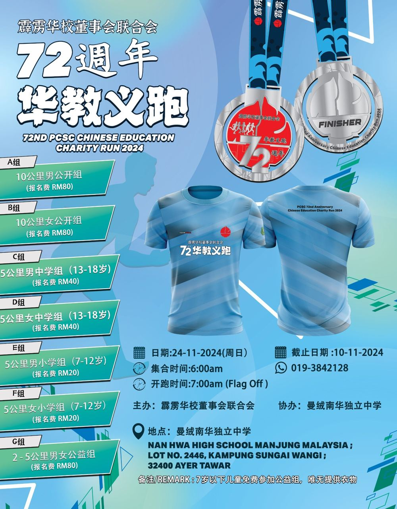

2024年度华教义跑 🌟
2024年度华教义跑 🌟
报名已正式开放！ 🔥
🏃♀ 携手奔跑，传递爱与希望！ 🏃♂
📅 日期：2024年11月24日
🕒 时间：上午 7:00 起跑
📍 地点：曼绒南华独立中学
🔥 报名已正式开放！ 这不仅仅是一场跑步，更是为华教未来而奔跑的机会！通过此次义跑，我们将为华教筹集活动基金，助力教育事业。你的每一步，都是对华教未来的支持。无论你是资深跑者，还是热衷公益的支持者，欢迎加入我们！💪💖
--
活动亮点：
🏅 精美纪念品：所有参与者将获得纪念奖牌、义跑T恤一件及福袋一份。
👟 多样化跑步路线：2公里、5公里、10公里，适合各年龄层和跑步水平。
👨👩👧👦 家庭友好：全家总动员，共享运动与公益的美好时光。
---
报名信息：
*** 线上报名程序：请点击链线上报名链接》完成缴费》 查收确认报名电邮回涵》等待领取T-Shirt/福袋的通知。
个人线上报名链接：
https://forms.gle/tYWsywDyHiWTbQtH8
备注：学校团体报名 （学生 / 教职员 / 行政人员 / 董事会成员）：
团体线上报名链接：https://forms.gle/Hs3etFN7Lsn3peiWA
团体报名表格链接：https://drive.google.com/drive/folders/1_vWki4g1zq6p33eCfG0uues4lp_IPspN?usp=sharing （请自行下载填写资料）
报名截止：2024年11月10日学校（学生）团体报名
*** 学校团体报名表 - 由负责老师收集/存档。
*** 学校（学生/其他人士）报名费 - 将由负责老师收集完后才上缴给霹雳董联会 （请点击选择缴费方式）。
*** 请学校/参加者自行安排交通。
